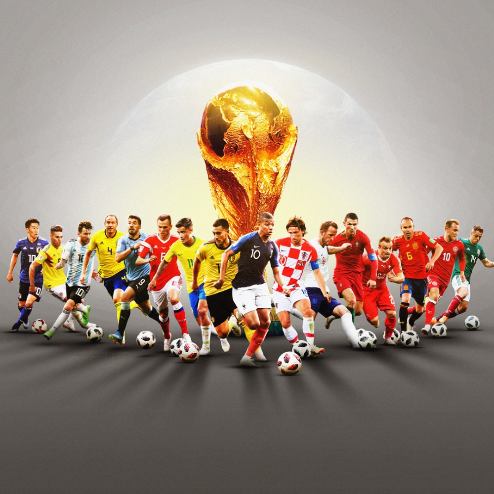

El fútbol es un deporte colectivo donde dos equipos se enfrentan y tratan de introducir un balón en la meta del equipo rival.Para ello, los jugadores se sirven de cualquier parte del cuerpo, menos los brazos y manos. El enfrentamiento entre equipos, llamado partido, tiene lugar en una cancha de césped de grandes dimensiones.
Cada uno de los equipos está formado por once jugadores que tienen diferentes funciones. Los delanteros tienen por objetivo marcar goles (introducir el balón en la portería rival). Los centrocampistas crean juego y pasan el balón a los delanteros. La labor de los defensas es defender la portería propia, y los guardametas (también llamados porteros o arqueros) son los encargados de evitar los goles rivales. Estos últimos son los únicos que pueden tocar el balón con las manos si están en su área (zona donde se encuentra su portería).
